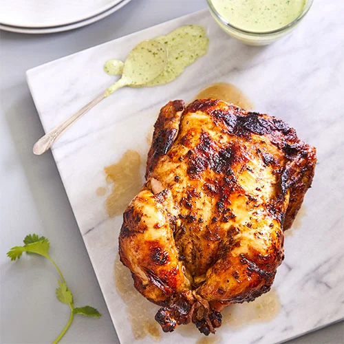

Peruvian Chicken Recipe

Peruvian Style Chicken Recipe from the Pampered Chef
\
Ingredients
- 1 whole chicken
- 2 tablespoons vegetable oil
- Juice from 1/2 small lime
- 2 teaspoons sugar
- 1 1/2 teaspoons ground cumin
- 1 teaspoon ground paprika
- 1 teaspoon ground oregano
- 1 teaspoon salt
- 1/2 teaspoon black pepper
- 4 garlic cloves, pressed
Steps
- Pat the chicken dry with a paper towel. Combine the remaining chicken ingredients in a small bowl and coat the chicken with the mixture.
- Tie the legs together with a 12" (30-cm) piece of cooking twine. Tie the wings against the breasts with a 24" (61-cm) piece of twine. Insert the Deluxe Air Fryer spit though the legs where they are tied together and through the cavity, centering the bird on the spit. Insert the forks securely into the chicken and tighten the screws.
- Turn the wheel to select the ROTISSERIE setting; press the wheel to select. Turn the wheel to adjust the time to 45 minutes. Press the wheel to start. When the timer is up, use the retrieval tool to remove the spit.* Cook until the internal temperature reaches 165°F (74°C), adding more time, if needed.